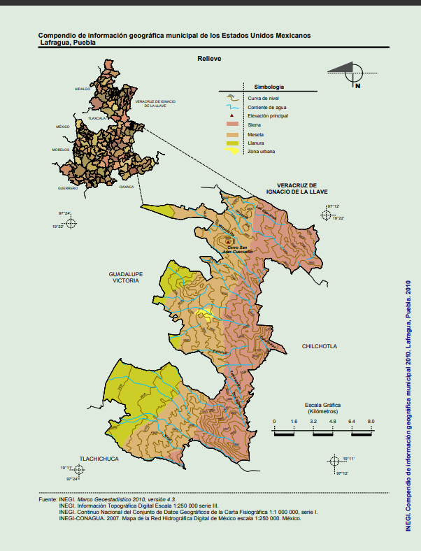

Comunidades del municipio de Lafragua
El municipio de Lafragua es uno de los 217 municipios que conforman el estado de Puebla, se ubica en su tercera región económica

Imagen representativa de los bosques y montañas de Lafragua.
Comunidades
Este municipio cuenta con las siguientes comunidades:
Agua de la Mina
Agua de la Mina es una pequeña localidad del municipio, caracterizada por su entorno rural y paisajes montañosos.
Aunque no cuenta con grandes desarrollos turísticos, la comunidad tiene ciertos atractivos para quienes buscan una experiencia más auténtica y tranquila:
- Paisajes naturales y ecoturismo: Esta comunidad está rodeada de bosques, montañas y fauna silvestre, lo que la convierte en un lugar ideal para hacer
caminatas, senderismo o disfrutar de la naturaleza en su estado más puro.
- Cultura local: La vida en Agua de la Mina transcurre en un ambiente rural y de tradición, lo que ofrece a los
visitantes la oportunidad de conocer las costumbres y modo de vida local.
- Agua y pozos históricos: Según algunas fuentes, el nombre "Agua de la Mina" hace referencia a la presencia de pozos o fuentes de agua de la localidad,
que fueron importantes para la vida del pueblo. Estos cuerpos de agua, aunque no se promocionen como grandes atractivos turísticos,
tienen un valor histórico y cultural relevante.
Cinco de Mayo (Buenos Aires)
Centro Ecoturistico Ocozotla
Cuauhtémoc
Dos Aguas
Rancho el Porvenir (el Manzanal)
El Sabinal (Francisco I. Madero)
González Ortega (Cuecuello)
La Ermita
La Galera
La Loma
Las Pastorías Zotoltepec
Las Trancas (Santa Cruz)
Loma Bonita (Santa Cruz)
Los Capulines
Los Viveros
Mesa del Rodeo
Nixcomiti
Palma Sola
Pocitos (San Miguel)
Puente Angosto
Rancho Zotoltepec
Saltillo (Cabecera)
San Isidro
Santa Cecilia
Tlanalapan
Vista Hermosa (Cacalotepec)